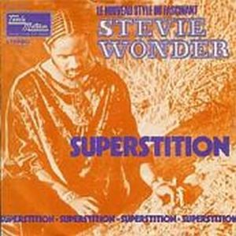
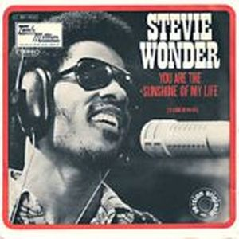

Love songs, funky tunes harmonious, committed lyrics, Talking Book is the MUSIC cubed. Stevie Wonder put this title to the album because considered the songs akin to chapters in a book that tell a whole story. It is a jewel of album that was rewarded with sales success, critical and awards. Here begins a climbing Grammys for songs like "Superstition" or "You are the sunshine of my life", which will take the next few years to grab the most important awards in the world of music.
It is the second album of his five albums called "classical period". It broke the myth that an artist of R & B music could do with ability to be appreciated by a rock audience. More free bonds of the Motown studio musicians collaborated as artists such as Jeff Beck, Ray Parker. Feton Jr. and Buzzy.
The album brings together a selection of romantic songs, love and hate engaged, at that time wife Syreeta Wright. Sweeteners ballads full of lyrics and melodies like "You and I (We Can Conquer the World)", "Blame It on the Sun", "Lookin' for Another Pure
Love" or "I Believe (When I Fall In Love It Will Be Forever)", seasoned with a production and a prodigious Stevie vocal qualities. The latter issue was the closure of the end credits of the movie "High Fidelity," his extraordinary way of turning the carnal and spiritual human, and their wonderful gospel explosion was all a wonderful way to close a work of art. But also, from the romantic side, we find a strand of social criticism that will be more enhanced in later albums. "Big Brother" denounces the hypocrisy of white politicians trying to collect votes in black neighborhoods. We cautioned against irrational beliefs by means of "Superstition", one of the best songs funky of all time, with the "grooves" most extraordinary ever built. It was a theme in mind Stevie Wonder wrote for his friend Jeff Beck, but Berry Gordy saw the grandeur of "hit" and ordered him to publish it in his album. The keyboard (clavinet) used as almost percussive instrument with a breathtaking arrangements of wind, caught an unprecedented rate.
A unique and essential album that, Rolling Stone magazine in 1993, considered as one of the top 100 best albums of music history.
 